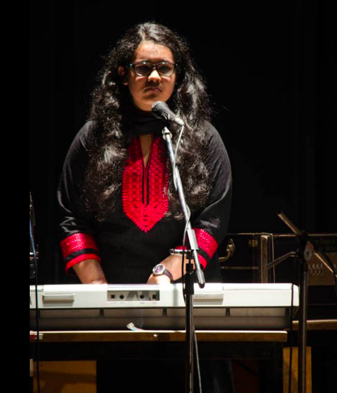
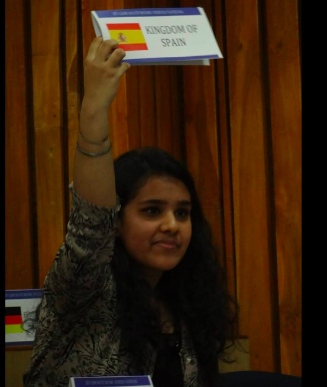

Music
I have been singing since I was five years old. It is the thing I love doing the most. Currently, I am a trained Indian Classical Vocalist with a Vishard Degree. I like all genres of music and particularly like fusion music, wherein I can mix and match a lot of genres. I can play Piano and Guitar and would love to add violin and drums to my list soon!
Literature and Public Speaking
I love writing poetry. It is something which is spontaneous. I've developed an interest in writing blogs these days, which you can have a look
here!. I like debating and MUNing and going through the current affairs!
Programming and Computers
I have always been tech savvy. My current interest in this field is reading and understanding new algorithms. As a fast learner, I can devour a new language with utmost interest. Also, since I am a night owl, most of my late nights are busy coding away along with caffeine supplements.
Mathematics
I have had a liking of Mathematics since forever, but during my JEE days, this bond had strengthened. It was my favourite subject in the whole of high school.
I like reading about the application of computers in mathematics and vice-versa.

